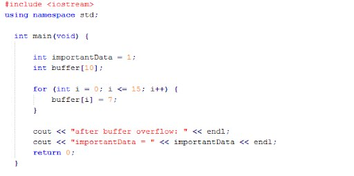

When I was in grade school, I learned to write in cursive. I hated it then, but I gained an appreciation for it long ago. A lot of younger millennials don’t even know how to read it, and they sometimes get a lot of grief for that. In defense of millennials, they probably know how to read THIS, better than most people who can read cursive.

So I don’t think it’s so bad that they can’t read cursive, because as much as I like it, knowing cursive is just not the potential life-changing upgrade that knowing a programming language is. And they’ve grown up in an age where programming is everywhere and accessible to almost everyone, and it’s become intuitive for them.
So touché, millennials.